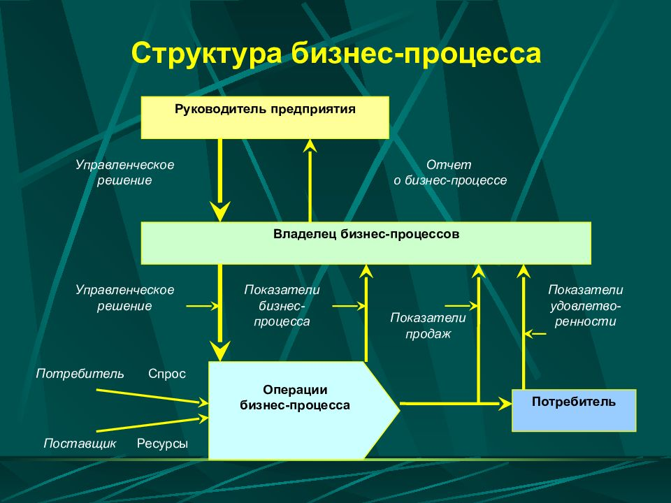

Под автоматизацией процессов понимается комплекс мер и мероприятий существенно улучшающий базовые параметры эффективности данного предприятия.

И, несмотря на то, что по сути предприятия могут быть самой разной направленности, это, в общем случае, при разбиении бизнес логики на процессы, всегда имеет под собой параметры оптимизации, которые можно улучшать.
Рассмотрим основные параметры оптимизации:
Каждый из параметров, в свою очередь, может зависеть от: